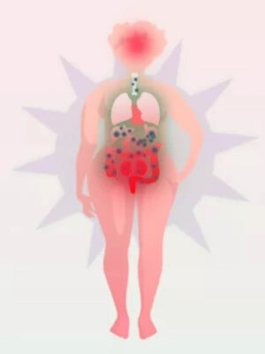

Nehmen Sie ab, indem Sie überschüssiges Fett verbrennen und Ihr Leben verlängern!
Der Effekt der automatischen Gewichtsabnahme bis zu 10 kg innerhalb 2 Wochen
Hallo, wir sind Sophie Mayer (Österreich),
Diego José Gutiérrez (Argentinien) und Keiichirōi Sanaka (Japan).
Von erstklassigen Wissenschaftlern werden wir "die jungen
Helden genannt, die das Gegenmittel gegen Übergewicht erfunden
haben". Es ist sehr angenehm. Aber mehr als Schmeichelei sind
wir froh, dass Sie dank uns das unnötige Fettgewebe verlieren können.
Und so gesund und glücklich sein.
Das von uns entwickelte „Gegenmittel gegen Übergewicht“ hilft innerhalb 2 Wochen bis zu 10 kg abzunehmen.
Wichtig: Sie verlieren Gewicht, ohne Ihre
Ernährung zu ändern und ohne Bewegung. Auf diese Weise verlieren Sie
dauerhaft bis zu 10, 30, 50 kg und mehr. Genau wie Frau Schmidt aus Graz, die
mit unserer Mehtode 100 kg verloren hat!
Ich habe ein neues Leben bekommen
Ich war so fettleibig, dass ich das Haus nicht einmal
verließ, weil ich mich schämte. Die Kinder im Hofnannten
nach mir "Elefant". Und ihre Mütter achteten nicht einmal
auf sie, sondern sahen mich angewidert an. Ich hatte Angst,
dass ich alleine sterben und den Kindern Probleme machen
würde, weil sie meinen toten Körper mit einem Kran aus dem
Fenster ziehen müssten. Mit diesem Gedanken schlief ich
jede Nacht ein...
Und heute?
Ich wiege 71 kg. Ich bin glücklich wie nie zuvor in meinem
Leben. Und vor allem: gesund! Ich bleibe nicht mehr zu Hause.
Ich verbringe Zeit mit meiner Familie und Freunden. Und der
beste Treffer ist, dass mein Ex-Mann mich immer wieder anruft.
Er will zu mir zurückkommen. Ich weiß nicht, ob ich damit
einverstanden bin, weil ich jüngere und schönere Männer treffe.
Einfach wunderbar...
Leonie Pichler, 55 Jahre alt, Graz
Sie hat in 102 kg 5 Monaten abgenommen!
❮
❯
Auch Sie können heute effektiv 10, 30, 50 kg und mehr verlieren
und so ein gesundes und glückliches Leben führen
Egal ob Sie eine Frau oder ein Mann sind. Egal wie alt Sie sind. Es
spielt keine Rolle, ob Sie seit Ihrer Kindheit oder seit mehreren
Monaten übergewichtig sind. Es spielt keine Rolle, was der Grund ist - ob
es sich um eine Schwäche für Süßigkeiten, sitzende Arbeit, Schwangerschaft,
hormonelle Probleme, Wechseljahre, eingenommene Medikamente usw. handelt.
Es ist nur wichtig, dass Sie abnehmen möchten. Das ist alles was zählt. Und
wissen Sie, dass Sie dies mit unserem Mittel schnell, einfach und sicher
erzielen. Egal was.
• Wenn Sie jetzt 100 kg wiegen...
In 4 Wochen wiegen Sie 80 kg und in 8 Wochen 60 kg! Sie können alle 2 Wochen bis zu 10 kg abnehmen.
Die Wirkung wird zweifelsfrei durch die Erfahrung mit dem Abnehmen
von 27.000 Männern und Frauen im Alter von 18 bis 98 Jahren bestätigt.
• Wenn Sie Angst um Ihre Gesundheit haben...
...weil Sie schlechte Cholesterin- und Zuckerwerte haben, Ihre Gelenke
schmerzen, Sie keine Energie haben und Sie befürchten, dass Übergewicht Ihr
Leben verkürzt... - in nur 2 Wochen können Sie Ihre Gesundheit verbessern.
Sie werden anfangen, viel Energie zu haben. Und in 4 Wochen wird Ihnen
nichts mehr wehtun. Sie werden aufhören, sich um Ihre Gesundheit und Ihr
Leben zu sorgen, denn dank einer schlanken und gesunden Figur haben Sie
keine Gründe mehr dafür.
• Wenn Sie gutes
Essen lieben und sich nicht an eine Diät halten können...
Sie müssen das überhaupt nicht tun! Es ist sogar nicht ratsam. Sie
können essen, was Sie wollen, da das Essen die Auswirkungen des
Mittels oft nicht beeinflusst. Sie können Gewicht verlieren, ohne
auf das Essen zu verzichten. Wie? Wir erzählen unten.
• Wenn Sie nicht gerne trainieren...
Tun Sie das nicht! Ihr Körper ist jetzt mit überschüssigen Kilo beladen.
Nehmen Sie nur dann körperliche Aktivität auf, wenn dies Ihre Gelenke und
Ihr Herz nicht zu stark belastet. Wenn Sie Lust auf Sport haben, tun Sie
dies in 2 oder 4 Wochen, nachdem Sie schlank sind. Dann werden Sie auch mehr
Freude daran haben.
• Wenn die Leute über
Ihr Übergewicht lachen...
Lassen Sie sie lachen. Verbringen Sie Ihre kostbare Zeit nicht damit, sich
darüber Sorgen zu machen. Da sie gemein genug sind, um Sie nach ihrem
Aussehen zu beurteilen, sind sie Ihre Aufmerksamkeit überhaupt nicht wert.
Und in nur wenigen Wochen haben Sie einen schlanken, attraktiven und vor
allem gesunden Körper, um den Sie alle beneiden werden!
• Wenn Sie Komplexe
aufgrund von Fettleibigkeit haben...
...weil es immer schwieriger wird, das richtige Outfit zu finden, oder Sie Angst haben,
dass Ihr Partner Sie nicht mehr mag – geben Sie sich einfach weniger als einen Monat.
Endlich können Sie Kleidung tragen, die ein paar Größen kleiner ist und Ihnen perfekt passt.
Ihr Partner wird nie wieder dünnere Mädchen ansehen und sich wieder in Sie verlieben.
Und Sie werden sich in Ihrem schlanken Körper wohlfühlen und mit Freude in den Spiegel schauen.
Und das alles...
OHNE DIÄT UND ÜBUNGEN
OHNE GELDVERSCHWENDUNG
OHNE LEBENSSTILÄNDERUNG
Tolle Figur nach der Schwangerschaft und trotz der Liebe zur Süße!
Danke, danke, danke für Ihre Methodes des Abnehmens! Ich wollte nach der
Schwangerschaft unbedingt abnehmen. Ich war vorher nicht dünn und
dann... Es ist bekannt, dass eine Frau, wenn sie schwanger
wird, sich kein leckeres Essen verweigert. Sie müssen nicht
aufpassen, was, wie viel und wann Sie essen. "Es ist alles für
das Baby". So eine gute Ausrede. Nach der Geburt
war ich viel zu übergewichtig. Ich konnte weder durch Hunger,
tägliches Joggen noch durch Fettverbrennungstees abnehmen. Ich
dachte bereits, dass ich für den Rest meines Lebens mit einem
riesigen Arsch und einem hängenden Bauch kämpfen würde, bis ich
auf dem Portal für Mütter einen Artikel über diese Methode
fand. Ich wusste sofort, dass es zu mir passen würde!
So ist es passiert! Weil ich weder zugesehen habe, was ich gegessen
noch trainiert habe - und 45 kg abgenommen habe! Ich bin
hundertmal energischer. Ich schaffe den ganzen Haushalt zu Hause so schnell,
dass ich Zeit habe, 10 Kilometer mit dem Fahrrad zu fahren, um mich mit meiner
Freundin zu treffen, bis mein Mann von der Arbeit nach Hause kommt.
Und wenn ich mit meinem Sohn auf den Spielplatz gehe, freut sich alles in mir!
Weil ich so dünn bin wie vor der Geburt, im Gegensatz zu den dicken Mamas auf dem Spielplatz.
Ich mag ein wenig wütend wirken, aber ich liebe dieses unglaubliche Gefühl,
wenn sie mich neidisch ansehen.
Maria Binder, 28 Jahre alt, Villach
Sie hat 45 kg in 8 Wochen abgenommen!
Wie haben wir unsere automatische Gewichtsverlustmethode erfunden?
Unsere bahnbrechende Entdeckung wurde während eines Praktikums im Singapore Science Lab
gemacht, zu dem 10 Genies aus der ganzen Welt eingeladen wurden.
Wir geben bescheiden zu, dass wir auch zu diesen 10 Genies gehören.
Unsere Liebe zur Wissenschaft, eine neue Herangehensweise an das Problem des
Übergewichts und die große Beharrlichkeit beim Handeln haben uns geholfen.
Wir haben 17 Monate lang Tag für Tag hart gearbeitet. Wir haben unsere eigene
Gesundheit durch Erschöpfung riskiert. Aber das ist okay, denn dadurch haben
wir ein Wunder vollbracht, zu dem die Wissenschaft seit 45 Jahren nicht mehr in
der Lage oder bereit war.
Wir konnten nicht länger beobachten, wie Menschen unter Übergewicht leiden
Warum haben wir uns entschieden, ein Gegenmittel gegen Übergewicht zu
erfinden? Um diesen Dominostein des Todes zu brechen! Menschen nehmen
alarmierend zu und werden schwer krank, weil sie übergewichtig sind. Und
es ist überhaupt nicht ihre Schuld...
Es ist die Schuld der verschmutzten Umwelt, in der wir leben. Die Schuld des
hochverarbeiteten Lebensmittels. Die Schuld der hormonellen Probleme. Die
Schuld des Stresses. Die Schuld des Lebens auf der Flucht. Die Schuld der
sitzenden Arbeit. Es ist eine Folge einer früheren Schwangerschaft oder
Wechseljahre. Es gibt viele Faktoren, aber das ist jetzt nicht wichtig.
Es ist wichtig und grausam traurig, wie fettleibige Menschen von anderen
behandelt werden...
Ich bin zum ersten Mal in meinem Leben dünn
Ich war zwölf Jahre alt, als ich anfing, stark zuzunehmen. Ich hatte schon immer Appetit,
zur großen Freude meiner Großmutter, die mich aufgezogen und mit fetten Speisen gefüttert hat.
Nur zu Hause fanden sie mich schön, in der Schule nannten sie mich dick. Ich wurde mein ganzes Leben
lang wegen meines Gewichts gehänselt. Und ich hatte keine Chance, es zu ändern.
Es genügte mir, zum Bus zu rennen, und mein Herz begann wie wild zu schlagen.
Die Leute verstanden nicht, wie ich litt und lachten. Mit einem Wort,
das Leben war unerträglich.
Gott sei Dank, dass mein Freund mir dieses Mittel empfohlen
hat (sein Vater hat sie benutzt und sehr gelobt). Ich habe es
versucht und ich habe buchstäblich zusehends abgenommen. Bis
jetzt, wenn ich morgens aufwache, glaube ich nicht, dass der
schlanke Typ im Spiegel ich bin. Ich wurde endlich mutiger
gegenüber den Mädchen. Ich bin seit 2 Monaten mit Jasmin
zusammen. Hoffe, dass etwas Ernstes dabei herauskommt. Und vor
allem: Wenn ich meine Großmutter besuche, störe ich sie nicht
und weigere mich nicht zu essen. Weil ich weiß, dass ich dank
diesem Mittel nicht zunehmen werde!
Killian Holzer, 35 Jahre alt, Steyr
Ich habe 61 kg innerhalb 3 Monaten abgenommen!
Wir werden nicht zulassen, dass übergewichtige Menschen als faule Vielfraße bezeichnet werden.
Meine Großmutter Veronika bekam Diabetes aufgrund von Fettleibigkeit und
verließ diese Welt vorzeitig...
- War meine Großmutter faul? Hat sie zu viel gegessen? War sie abstoßend?
Absolut NICHT! Sie war eine schöne Frau, weil sie ein gutes und liebevolles
Herz hatte. Sie war nie faul. Entweder arbeitete sie im Garten, bereitete
Essen für die ganze Familie zu oder sie kümmerte sich um behinderte Kinder
für wohltätige Zwecke. Sie war also sehr körperlich aktiv! Und sie hat nie
zu viel gegessen - sagt Sophie - sie war sogar auf Diät und hat nur 3 Äpfel
pro Tag gegessen! Es hat nichts getan...
Diego's Vater starb an einem Herzinfarkt, der durch Fettleibigkeit verursacht wurde...
- Mein Vater hat physisch in einer Fabrik gearbeitet. Er trug die ganze Zeit
Gewichte. Jeder Tag seiner Arbeit war wie ein intensives Training im
Fitnessstudio. Trotzdem war er 30 kg übergewichtig. Er ging sogar zu Ernährungsberatern,
aber sie halfen ihm nicht. Ich hätte viel gegeben, um dieses
Gegenmittel gegen Fettleibigkeit früher zu erfinden. Papa wäre heute bei uns -
gesteht Diego traurig.
In Keiichirōs Fall ist Fettleibigkeit erblich...
- Jahrelang ging meine ganze Familie zu Ärzten, Ernährungswissenschaftlern und
Trainern. Und seit Jahren hat es für nichts, überhaupt nichts funktioniert.
Es spielt keine Rolle, dass Mutter IMMER diätetisch gekocht hat: Reis,
gedämpftes Gemüse und mageres Fleisch? Und so nahmen wir alle zu, als würden
wir jeden Tag 10 Burger und Pommes essen! Deshalb habe ich beschlossen, selbst
etwas dagegen zu lernen und zu tun, um das Leben meiner Lieben zu retten,
sagt Keiichirō.
Sie sind wunderbar und verdienen Respekt, egal wie schwer Sie sind
So wird es in der Welt gemacht, dass Menschen, die sichtbar übergewichtig
sind, lächerlich gemacht werden. Wir stimmen dem nicht zu! Normalerweise
sind übergewichtige Menschen besser als dünne Menschen. Weil sie wissen, wie
es ist, ein Ausgestoßener zu sein oder verspottet zu werden. Deshalb haben
sie mehr Wärme und Verständnis. Sie sind gute Freunde.
90, 120, 150, 180 kg? Diese dummen Zahlen auf der Skala sind nicht Sie! Das
wahre Sie sitzt da drinnen, nur versteckt unter einer Schicht Fett...
Und Sie müssen sich von dieser fettigen Schicht befreien, nicht um anderen
zu gefallen, sondern um Ihre Gesundheit und vielleicht sogar Ihr Leben zu
retten. Tatsache ist, dass Übergewicht Ihr Leben um durchschnittlich 12
Jahre verkürzt. Aber alles sollte nicht so traurig enden! So KANN NICHT sein!
Perfektes Wohlbefinden im Alter!
Mein Mann und ich waren weit über 30 kg übergewichtig und daher
bei schlechter Gesundheit. Im Alter wird es immer schwieriger,
überschüssigen Körper zu ertragen. Ich hatte Probleme mit
Gelenken (Knie und Hüfte) und ich hatte zu viel Zucker, und
Albert hatte Arteriosklerose. Jeden Tag beschwerte er sich über
einen Herzinfarkt. Der Arzt im Zentrum sagte uns, wir sollten
abnehmen und das wird uns helfen. Wir haben es ein bisschen versucht,
aber es hat nicht viel geholfen. Als unsere Enkelin Heidi es
hörte, suchte sie sofort im Internet nach etwas, das wir
abnehmen konnten, und fand diesen Weg.
Was für Wunder waren das! Es hat bei mir und Albert genauso
funktioniert. Wir haben Kilogramm für Kilogramm so schnell
und einfach verloren, dass wir es nicht glauben konnten. Ich
musste alle meine Kleider in kleinere verwandeln! Aber das
ist gut so, denn jetzt sind wir schlank und voller Energie,
wie in der Jugend. Der Spezialist war erstaunt und sagte
, dass sie stolz auf solche Patienten war.
Christine und Albert Wolf, 72 und 75 Jahre alt, Baden
Sie haben 21 und 26 kg in 5 Wochen abgenommen!
Sie lachten uns aus, als wir mit unserer Arbeit begannen...
Andere "junge Genies", die ins Singapore Science Lab eingeladen
eingeladen wurden, beschlossen, Lösungen für die Probleme von Diabetes,
Arteriosklerose und Degeneration von Gelenken und Wirbelsäule zu erarbeiten.
Als wir das hörten, bissen wir wütend die Zähne zusammen.
Schließlich werden all diese Beschwerden durch Übergewicht verursacht!
Schließlich ist es einfach und logisch, die Ursachen und nicht die
Auswirkungen zu bekämpfen! Menschen sollten gesund sein, indem sie ein
gesundes Gewicht haben, und sich nicht mit Chemikalien überladen, die auf
Krankheiten zurückzuführen sind, die durch Übergewicht verursacht werden.
Wir haben uns entschlossen, alles zu tun, um ein Gegenmittel gegen Übergewicht
zu finden. Wir haben Tag für Tag hart gearbeitet. Wir haben mehr als einen
Verweis erhalten, weil wir nachts im Labor gesessen haben - wenn theoretisch
niemand dort erlaubt ist. Unsere Forschung ging jedoch in eine so gute
Richtung, dass wir aufgeregt waren und nachts nicht schlafen konnten. Wir
mussten weiter arbeiten!
17 Monate unserer Forschung haben den Ansatz zur Gewichtsreduktion und zum
Problem des Übergewichts revolutioniert. Wir entdeckten eine Reihe von
Abhängigkeiten in der Funktionsweise des menschlichen Stoffwechsels, die
bisher keine Wissenschaftler entdeckt hatten. Als wir mit der Forschung
begannen, gingen wir davon aus, dass...
Sogar eine Person mit einem Gewicht von 200 kg ist innen schlank
Wenn Sie eine Röntgenaufnahme Ihres Körpers machen, sehen Sie eine normale,
schlanke Figur auf dem medizinischen Bildschirm. Sie können leicht erkennen,
dass Sie sie in sich haben, indem Sie stärker auf Bauch, Arme oder Beine
drücken. Dieser federnde Widerstand, den Sie spüren werden, ist unnötiges
Fettgewebe.
Auf einem schlanken Körper tragen Sie eine schwere und unnötige
Fettschicht. Je nachdem, wie übergewichtig Sie sind, ist sie einige bis
mehrere Dutzend Zentimeter dick. Sie wiegt mehrere bis mehrere Dutzend
Kilogramm. Die gute Nachricht ist, dass Sie innen einen attraktiven Körper
mit einer perfekten Figur haben. Er ist nur unter der Fettschicht versteckt.
Alles was Sie tun müssen, ist diese Schicht abzunehmen. Wir wissen wie!
Fett ist ungleich Fett
Das Fettgewebe ist sehr heterogen. Schauen wir sie uns genauer
an. Diese Folie zeigt, dass die Fettschicht aus 3 Schichten
besteht.
1.
Unterhautfett
Es ist die äußere Schicht direkt unter der Haut, von der 57%
Wasser ist. Hier bilden sich Cellulite und schlaffe, gelartige Haut.
2.
Subfasziales Fett
Es ist eine mittlere Schicht, ähnlich wie Butter oder Schmalz.
Sie wiegt immer am meisten und speichert Giftstoffe, die Stress,
Müdigkeit und Hautprobleme verursachen.
3.
Viszerales Fett - und das ist dein wahrer Feind, den Sie besiegen m[ssen!
Es ist die innere Schicht. Es ist die dünnste, aber widerstandsfähigste Schicht, wie die harte Sohle eines Schuhs.
Es ist sehr schwer loszuwerden. Aus diesem Grund wird der Jojo-Effekt erzeugt. Wie
passiert das? Selbst wenn es uns gelingt, Gewicht zu verlieren,
"will" sich das Fossil mit mehr Fettschichten bedecken, und das
schnell.
In unseren Forschungen mit 9.000 übergewichtigen Menschen haben wir
deutlich gezeigt, dass die bisher bekannten Methoden zum Abnehmen nur auf
die zweite Schicht der Fettschicht, den Fettschlamm, wirken. Ein solches Vorgehen ist zum Scheitern verurteilt.
Die wahre Ursache des Jojo-Effekts
Das Abnehmen durch Ernährung und Bewegung ermöglicht es Ihnen, ein paar Kilogramme viskoses subfasziales Fett
zu verbrennen, während das viszerale Fett erhalten bleibt.
Sobald Sie mit dem Abnehmen fertig sind, rächt sich das viszerale Fett!
Es stimuliert eine Zunahme der Menge an subfaszialem Fett.
Ich habe meine Komplexe überwunden und Liebe gefunden
Ich war in meinem Leben genau 17 Mal auf Diät. Ich habe
versucht zu fasten - keine Wirkung. Kohldiät, Dukan-Diät,
Reinigungsdiät, ketogene Diät. Ich habe alles versucht - keine
Wirkung. Ich war verzweifelt, weil meine Komplexe alle meine
Beziehungen ruinierten. Ich war eifersüchtig auf meine Partner,
beschwerte mich über mein Aussehen... Ich hätte nie gedacht,
dass ich nach so vielen Jahren der Qualen durch die Einnahme
von natürlichen Kapseln abnehmen würde. Nun, das war ein
Schock!
Kleidung zu kaufen ist nicht länger mein Ärgernis, weil sie
überall meine Größe S oder M haben!!! Ich schäme mich nicht
dafür, wie die Leute mich im Urlaub ansehen. Eigentlich eine
180-Grad-Veränderung. Und ich fühle mich zu 100% weiblich,
vollwertig und verdiene die Aufmerksamkeit eines Mannes. Ich
habe keine Angst, dass ich mit einem schlanken Küken betrogen
werde. Weil ich das dünne Küken bin! Und mein jetziger Mann
hat mir kürzlich einen Heiratsantrag gemacht. Ich liebe mein
Leben!
Ariane Schmidt, 41 Jahre alt, Wien
Sie hat 38 kg in 7 Wochen abgenommen!
Zerschmettern Sie das Fettfossil mit einem harten Schlag
und machen Ihnen keine Sorgen MEHR über Übergewicht
Viszerales festes Fett ist Ihr wahrer Feind. Wenn Sie es nicht loswerden,
werden Sie niemals Übergewicht los. Sie können diese Art von Fett dank unserer Methode loswerden. Wir haben seine
Existenz bewiesen, es untersucht und den Weg erfunden, es loszuwerden.
Wie funktioniert es?
1.
Schnelle und automatische Fettverbrennung
Durch den Abbau des harten Fettschichtes verliert der Fettschlamm
buchstäblich "an Boden". Es gibt nichts zu beanstanden, also
brennt er. Dank dessen verschwindet auch das Unterhautfett sehr schnell - Innerhalb von 7 Tagen nach Kurbeginn können Sie Cellulite loswerden.
2.
Reinigung des Organismus von Toxinen
Wenn der Mechanismus aktiviert ist, dank dem der Körper genug Kraft hat,
um Fett abzubauen, wird der Körper von den darin angesammelten Toxinen gereinigt.
Dadurch schlafen Sie besser, haben mehr Kraft und Optimismus. Ihre Haut, Haare und Nägel
erholen sich und werden gesünder. Sie werden gesund und attraktiv aussehen..
3.
Schutz gegen Jojo-Effekt
Und vor allem: Der Abbau des viszerales Fettes schützt vor dem
Jojo-Effekt. Dies bedeutet, dass Sie, sobald Sie abnehmen,
nie wieder zunehmen werden. Studien haben eindeutig gezeigt, dass
der Körper aufgrund des Abbaus von innerem Fett sein Gedächtnis
auf zellulärer Ebene neu startet. Er vergisst nur, wie sich Fett auf
dem Bauch, den Oberschenkeln, dem Gesäß und dem gesamten Körper
ablagert. Und Ihr Stoffwechsel erhöht den Umsatz, sodass Sie
essen können, was Sie wollen, aber nicht zunehmen. Genial,
richtig?

VORHER
NACHHER
Körper mit Fett bewachsen, mit Giftstoffen vergiftet, ohne Energie.
Der schlanke Körper, frei von Giftstoffen, voller Energie und gesund.
Ihr Körper ist bereits trainiert
Sie haben genug von der täglichen Qual, als würden Sie in einem Geschäft in drei Schichten arbeiten.
Sie sind gezwungen, diese zusätzlichen Kilos jeden Tag auf sich zu tragen.
Es ist, als würde man 2 Packungen Wasser nehmen und sie den ganzen Tag tragen. Und man konnte sie nicht einmal
auf den Boden legen. Kein Sportler kann täglich so viel tragen wie übergewichtige Menschen.
Seit vielen Jahren!
Unser Mittel wirkt nur auf Fett. Insbesondere verbrennt sie nur Fett,
ohne Muskeln zu verbrennen. Das ist sehr wichtig. Auf diese Weise enthüllen
Sie einfach Ihren bereits fitten Körper. Sie erhalten nicht nur eine
attraktive Figur, sondern auch Muskelskulptur, Effizienz und Kraft.
Sie müssen im Fitnessstudio nicht schwitzen. Sie haben bereits einen
gesunden Körper in Ihnen. Es reicht aus, die Fettschicht zu entfernen.
Unsere Methode ermöglicht es Ihnen, die Fettschicht so
einfach und schnell zu entfernen, wie Sie den
Bademantel ausziehen.
Schnell und gesund!
All dieser Gewichtsverlust war wie ein Fingerschnipsen! Ich
habe am ersten Tag des Urlaubs mit der Einnahme dieses Mittels
begonnen. Als ich nach zwei Wochen wieder zur Arbeit ins Büro
zurückkehrte, waren alle schockiert. Mein Chef lud mich sogar
zu einem Gespräch ein und fragte mich ernsthaft besorgt, ob
ich eine schwere Krankheit habe, bei der ich so schnell
abgenommen habe. Er atmete unverhüllt auf, als ich Ihnen von
diesem Mittel erzählte und wie wunderbar ich mich fühle!
Daria Strasser, 37 Jahre alt, Linz
Sie hat 22 kg innerhalb 4 Wochen abgenommen!
Pflanzen, die das fette Fossil mit einem Schlag zerschlagen
Das echte Gegenmittel gegen Übergewicht war seit Hunderten von Jahren in
Pflanzen verfügbar. Diese Pflanzen wuchsen friedlich auf der Erde und
warteten nur darauf, dass jemand sie endlich bemerkte. Alles was wir tun
mussten, war sie miteinander zu verbinden und sie arbeiten zu lassen.
Die Menschheit brauchte nur eine Anstrengung, um Übergewicht loszuwerden ...
Als wir mit unserer Arbeit begannen, wählten wir über 100 Pflanzen aus
und untersuchten sie sorgfältig. Im Laufe der Forschung haben wir einige der
effektivsten Extrakte ausgewählt. Jeder individuell erzeugte Effekt ähnlich
wie Bewegung und Ernährung. Es war nicht genug.
Die Wirkung solcher Einzelextrakte könnte man mit der Arbeit eines Bergmanns
vergleichen, der allein einen Tunnel in einem großen Berg graben soll. Es
wäre ihm gelungen, aber es hätte sein ganzes Leben gedauert. Um den Berg zu
durchbrechen, benötigen Sie einen riesigen Bohrer, der die Aufgabe in wenigen
Tagen erledigt.
Unser Mittel ist ein so großer Bohrer, der schnell von überschüssigem Fett befreit.
Die Wirksamkeit liegt in der Kombination von Extrakten aus einzigartigen
Pflanzen aus verschiedenen Kontinenten. Die Zutaten arbeiten mit der kombinierten Kraft
von 100-mal. Für festes Fett ist diese Kombination erstaunlich. Es
verteidigt sich nicht einmal, es gibt nur nach und entlastet den Körper von
Übergewicht!
Wirkung an der Wurzel des Problems
Eine weitere wichtige Entscheidung war die Form unseres Adipositas-Mittels.
Übungen, Diät, Lotionen zur Fettverbrennung oder transdermale Pflaster -
sie betreffen nur subfasziale und subkutane Fette. Also dasjenige, das
schnell verschwinden kann, aber noch schneller und mit doppelter Stärke
zurückkehrt.
Deshalb haben wir uns für natürliche Kapseln entschieden, die direkt an der
Quelle wirken. Sie helfen, viszerales Fett mit großer Effizienz abzubauen und verteilen ihre Wirkung im ganzen Körper.
"Historischer Durchbruch in der Wissenschaft"
Diesen Namen haben weltberühmte Wissenschaftler unserer neuen Methode gegeben. Wieso den?
Zerstört alle 2 Wochen bis zu 10 kg - Wenn Sie unsere Methode
anwenden, kann der Gewichtsverlust 12-mal schneller als bei einer
drakonischen Diät in Kombination mit täglichem Training sein.
Sie ist natürlich und sicher - enthält nur natürliche Inhaltsstoffe,
die das Eingeweidefett nicht schonen, aber sanft auf das Verdauungssystem einwirken.
Sie beeinträchtigen keine anderen Mittel, die Sie einnehmen, und verursachen keine Allergien.
Sie müssen Ihre Ernährung nicht ändern - es ist sogar verboten!
Die Diät verlangsamt den Stoffwechsel, was beim Abnehmen nicht
ratsam ist. Unser Mittel ist intelligenter und hilft, den Feind Ihrer schlanken Figur zu zerstören -
viszerales Fett.
Erfordert keine körperliche Anstrengung - Sie können während der
Einnahme des Mittels trainieren, müssen dies aber nicht. Abnehmen erfolgt
unabhängig von körperlicher Aktivität. Sie können Zeit auf der Couch
vor dem Fernseher verbringen und trotzdem garantierte Ergebnisse
erzielen.
Sie müssen nicht viel dafür bezahlen - Tausende von Euro, die Sie
für einen Ernährungsberater, ein Fitnessstudio, Tees und
Nahrungsergänzungsmittel zum Abnehmen ausgeben würden - bleiben in
Ihrer Tasche.
Und vor allem: Es basiert auf den neuesten wissenschaftlichen Entdeckungen, die von den besten Wissenschaftlern bestätigt wurden.
Effizienz immer und unter allen Bedingungen
Hier sind Diagramme, die zeigen, welche Ergebnisse wir erhalten haben,
sowie Ergebnisse aus einer Reihe von Forschungszentren in Japan, den USA,
Kanada, Südkorea und Argentinien. Die vorgestellten Ergebnisse decken insgesamt
27.000 Männer und Frauen im Alter von 18 bis 98 Jahren ab.
Durchschnittlicher Gewichtsverlust in 2 Wochen nach Alter:
10,8 kg
18-29 Jahre alt
10,1 kg
30-39 Jahre alt
10,5 kg
40-49 Jahre alt
10,5 kg
50-59 Jahre alt
10,9 kg
60-69 Jahre alt
10,8 kg
70-98 Jahre alt
Die Ergebnisse zeigen deutlich, dass die Wirkung unabhängig vom Alter eintritt
und die besten Ergebnisse von Personen im Alter von 40-59 Jahren erzielt werden.
Durchschnittlicher Gewichtsverlust in 2 Wochen aufgrund von Beruf:
10,1 kg
Sitzende Arbeit
(Büro, Amt)
10,4 kg
Stehende Arbeit
(Laden, Restaurant)
10,7 kg
Körperliche Arbeit
(Baustelle, Kurier)
Die Ergebnisse zeigen deutlich, dass die Wirkung unabhängig von
der mit dem ausgeübten Beruf verbundenen körperlichen Aktivität erzielt wird.
Durchschnittlicher Gewichtsverlust in 2 Wochen nach Geschlecht
10,8 kg
Frauen
im Alter von 18 bis 98 Jahren
10,2 kg
Männer
im Alter von 18 bis 98 Jahren
Die Ergebnisse zeigen deutlich, dass die Wirkung unabhängig vom Geschlecht auftritt.
Frauen verlieren etwas
schneller an Gewicht als Männer.
Ich esse was ich will und mein Bauch ist weg!
Ich habe mich oft auf verschiedene Anzeigen und Empfehlungen
von Freunden getäuscht. Auch hier war ich zuerst fest auf dem NEIN.
Aber meine Töchter wollten mich nicht in Ruhe lassen und
sagten mir, ich solle diese Kapseln nehmen, da ich keinen
Salat essen möchte. Also habe ich sie um des lieben Friedens
willen eingenommen. Die Zusammensetzung ist natürlich, also
dachte ich, es würde mich nicht verletzen und der Preis ist auch gut. Und glücklicherweise
war ich davon überzeugt, dass ich mich dieses Mal völlig geirrt hatte.
Mein Bauch ist in einer Woche buchstäblich gesunken.
Ich gebe auch zu, dass ich mich viel besser fühle. Ich spiele
sogar Fußball mit meinen Enkelkindern, ohne außer Atem zu
sein. Aber ich esse auf meine Weise. Sehr schön.
Stefan Wallner, 66 Jahre alt, Amstetten
Er hat 17 kg in 3,5 Wochen abgenommen!
Schauen Sie wie einfach es ist...
Sie müssen monatelang nicht nur Äpfel, Karotten und Salat essen. Sie müssen
nicht ins Fitnessstudio gehen. Sie müssen nicht einmal Ihr Haus verlassen.
Sie können essen, was Sie wollen. Sie müssen sich nicht viel bewegen. Sie ändern
absolut nichts in Ihrem täglichen Leben. Der Weg, um bis zu 10 kg in 2 Wochen
abzunehmen, ist sehr einfach. Wie läuft die Abnhamekur ab?
Sie müssen 1 Kapsel 2 mal täglich 30 Minuten vor den Mahlzeiten einnehmen. Das war's.
Sie kümmern sich um nichts. Sie leben Ihr Leben wie zuvor und Ihr
Körper verwandelt sich in eine Kalorienverbrennungsmaschine. Es baut die harte Fettschicht ab,
um endlich die schlanke und attraktive Figur zu zeigen, die in Ihnen steckt!
Sehen Sie, wie sicher es ist
Sie sind nicht in Gefahr von Unterernährung oder Schwäche - wie bei einer
Diät. Sie sind nicht dem Risiko von Gelenkverletzungen oder
Herzrhythmusstörungen ausgesetzt - wie beim Training. Sie werden keine
Nebenwirkungen erfahren. Warum?
Das Mittel ist 100% natürlich. Seine Einnahme hat keinen Einfluss auf die Wirkung von Mitteln,
die angewendet werden, reizt das Verdauungssystem nicht und verursacht keine Allergien.
Einige nennen uns Helden, andere... "Verlierer"
Ja, Verlierer... Und das nur, weil wir bereits 27.000 Menschen abgespeckt
haben, ohne Geld mit unserer Entdeckung zu verdienen. Gemeinsam haben wir entschieden,
dass wir in einer Zeit, in der die Geißel der Fettleibigkeit Millionen von Menschenleben auf
der ganzen Welt fordert, keine Provision für den Verkauf unserer Einrichtung verlangen werden.
Wir haben beschlossen,
sie den Menschen zur Verfügung zu stellen, ohne dafür bezahlt zu werden.
Seit einem halben Jahr haben bereits 27.000 Menschen davon profitiert,
worüber wir uns sehr freuen.
Leider wird das Mittel mit dem Verkauf des Patents mindestens 10-mal teurer als jetzt.
Deshalb ist es uns so wichtig, dass jeder, der es braucht,
es bekommt, bevor das Patent verkauft wird. Daher empfehlen wir Ihnen dringend, JETZT zu handeln!
Sie riskieren nichts!
Unser Mitte, das zu Hause verwendet darf, heißt . Wenn Sie
sie wählen, riskieren Sie nichts. Dies liegt daran, dass Sie durch die
dreifache Zufriedenheitsgarantie geschützt sind, die Folgendes umfasst:
die Garantie der Echtheit, die Garantie der Qualität und der
Wirkung.
Originalprodukt mit Zertifikat - Sie können sicher sein, dass Sie
das Originalprodukt erhalten, das nur über diese Website erhältlich
ist.
Qualität durch Tests bestätigt - aufgrund der fortschrittlichen
Produktionsmethode, erfüllt das Mittel die höchsten
Qualitätsstandards. Alle Inhaltsstoffe sind 100% gesundheitssicher.
Wirksamkeit von 27.000 Anwendern bestätigt - zahlreiche
Verbrauchertests bestätigen auch die höchste Wirksamkeit des Mittels.
Weil das Leben zu gut ist, um durch Übergewicht oder Komplexe verkürzt zu werden
Sie müssen nicht mehr leiden. Besiegen Sie das Fettfossil und retten Sie
Ihre Gesundheit. Sie riskieren nichts. Sie haben absolut nichts zu verlieren.
Das einzige, was Sie verlieren können, sind 20 kg, 50 kg oder sogar 100 kg
Übergewicht. Sie erhalten jedoch eine attraktive Figur, viel positive Energie
und eine gute Gesundheit.
Sie haben jetzt 1 einfache Wahl:
1.
Keine Maßnahmen unternehmen...
Immer noch unter der Fettschicht Ihres Körpers leiden, sich mit
Komplexen quälen und Ihre Gesundheit gefährden...
2.
Nutzen Sie die Chance, die Sie JETZT bekommen!
Verbrennen Sie das verhasste Körperfett und werfen Sie die Fettschicht ab!
Es ist so einfach! Das Ausfüllen des Formulars dauert nur 2 Minuten und
Sie können in wenigen Tagen mit dem Abnehmen beginnen.
Verwirklichen Sie Ihren Traum von einem schlanken und gesunden Körper!
Vielen Dank für das Lesen unserer Nachricht. Wenn Sie unser Mittel einnehmen,
werden Sie sich nach einigen Wochen, nachdem Sie bereits
ein schlanker und gesunder Mensch geworden sind, an diesen Tag erinnern und verstehen:
"Es war der Tag, der mein
Leben verändert hat...".
Wir wünschen Ihnen Gesundheit und Glück!
Sophie, Diego i Keiichirō
Kaufen Sie
für , um Zugang zu Bildungsdiensten zu bekommen
Anzahl der verbleibenden Stücke mit Finanzierung:20
ES IST GROSSARTIG. Es gab nicht einmal eine Spur von meinem
Problem. Ich habe das Gefühl, dass ich mehr Energie und
Optimismus habe. Es ist, als wäre ich 20 Jahre jünger. Die
Lebensfreude kam zu mir zurück!
Monika
Graz
Abnehmen mit diesem Mittel ist einfach! Früher hatte ich mit
chemischem Müll zu kämpfen, und ist nicht nur völlig
gesundheitssicher, sondern funktioniert auch besser als alle
zusammen.
Adam
Steyr
Weißt ihr was mir am besten gefällt?
Dass nicht nur
funktioniert, sondern auch 100% sicher für die Augen ist. Es
gibt also keine Nebenwirkungen. Die Welt kennt keinen besseren
Weg, um mit diesem Problem umzugehen!
Emma
Hartberg
Durch mein Problem fühlte ich mich wertlos. Die erfolglosen
Therapien dauerten Jahre. Bis eines Tages gab mir meine Frau
. Lassen Sie es mich kurz sagen: Ich habe mich nie
besser gefühlt!
Matthias
Wörgl
Es ist erstaunlich, dass eine so einfache Methode solche Wunder
wirkt! Und das in weniger als einem Monat. Ich kann es jedem
empfehlen.
Rosalie
Wels
Wenn ich gewusst hätte, dass es so einfach ist, hätte ich es
schon vor langer Zeit benutzt. Moment - und Problem gelöst! Ich
empfehle es allen, die längst die Hoffnung verloren haben, dass
ihnen etwas hilft.
Hannah
Leonding
Was mich betrifft - diese Entdeckung verdient einen Nobelpreis.
In 28 Tagen habe ich das Problem vollständig beseitigt. Früher
hatte ich 5 Jahren lang ich mit diesem Problem zu kämpfen und
nichts. Coole Sache!
Liam
Gmunden
Ich bin bereits ein Jahr nach der Einnahme von diesem Mittel und empfehle es -
die Auswirkungen bleiben bestehen, es treten keine Probleme mehr
auf.